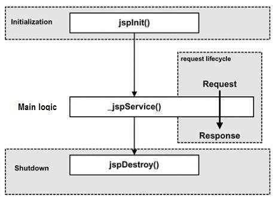
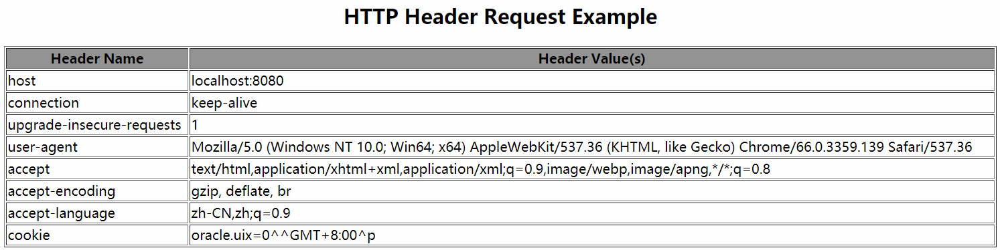
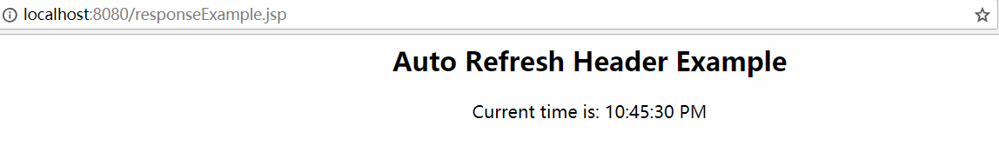
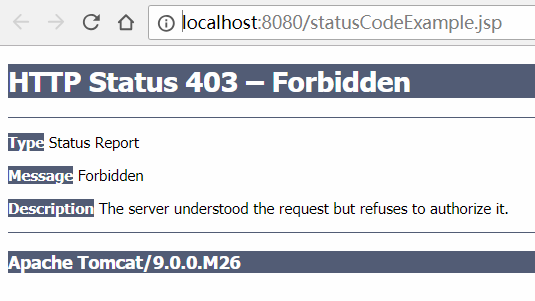
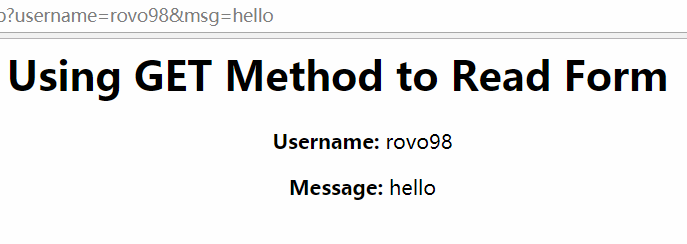
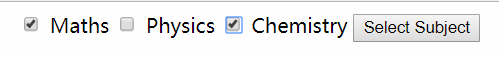
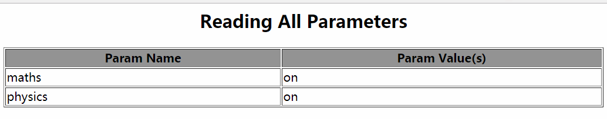

Java 服务器页面(jsp) 是用来开发动态页面的一项技术。
概述
JSP 允许开发人员使用指定的 JSP 标签来向html页面中插入java源代码，标签通常是以 <% 开头并以 %> 结束。
为什么使用 JSP？
使用Java服务器页面(jsp)与使用实现 Common Gateway Interface(CGI)的程序目的是大致相同的。但对比CGI，jsp有以下优点：
- 性能较好。因为JSP允许直接在html页面中嵌入动态元素，而不需要独立持有CGI文件；
- JSP在服务器处理前都会进行预编译，不像 CGI/Perl, 每次页面被请求时，服务器都需要加在一个解释器(interperter) 以及目标脚本(target script);
- JSP是基于 Java Servlets API 构建的，因此，和Servlets一样，JSP也可以使用这些强大的Enterprise Java API, ：
JDBC,JNDI,EJB,JAXP, 等等**； - JSP 页面可以和处理业务逻辑的servlets结合使用，该模型由
java servlet模板引擎提供支持。
最后，JSP是JavaEE(企业级应用程序的完整平台)的一个组成部分。这意味着JSP可以在最简单的应用程序中扮演最复杂和最苛刻的角色。
使用JSP的优势
下面通过对比不同的技术来体现使用JSP的优点：
vs. Active Server Pages (ASP)
对比ASP, JSP有两大优点：第一是页面的动态部分是用java写的，而不是Visual Basic或其他MS特定的语言编写，所以它更强有力且易于使用；第二是它可以移植到其他的操作系统和非Microsoft的Web 服务器上，这使它更加健壮。
vs. Pure Servets（纯Servlets)
使用JSP可以更容易编写和修改常规的html代码，而不是使用大量的 println语句来生成HTML。
vs. Server-Side Includes (SSI)
SSI 实际上只适用于处理简单内容的程序，而不适用于使用表单数据，进行数据库连接等的程序。
vs. Javascript
JavaScript 可以在客户端生成HTML，但很难和Web 服务器实现复杂任务的交互，例如：数据库访问以及图像处理等。
vs. 静态HTML
常规的HTML不能包含动态的内容，无法动态地改变页面展示的数据。
架构
Web服务器需要JSP引擎（容器）才能处理JSP页面。JSP容器负责拦截JSP页面的请求。JSP容器和Web服务器一起可以为JSP提供运行环境和其他服务。使服务器可以识别JSP中的特殊元素。
下面展示的是JSP容器和JSP文件在Web应用程序中的位置：

JSP处理过程
下面的步骤是Web服务器处理JSP生成Web页面的过程：
- 和普通的页面一样，客户端的浏览器会向Web服务器发起一个
HTTP请求。 - Web服务器识别出该
HTTP请求是JSP请求，然后将请求转发给JSP引擎处理。即请求链接是以.jsp结尾的URL。 JSP引擎从硬盘中加载JSP页面并将它转换为Servlet文件。该转换过程非常简单，将所有的模板内容都转换为println()语句，所有的JSP元素都转换为Java代码。这些Java代码实现了页面中的动态行为。JSP引擎将Servlet文件编译成可执行class文件，并将原始请求转发给servlet引擎。Servlet引擎加载Servletclass文件并执行。执行期间，生成HTML文件并放在HTTP response中，随后通过servlet引擎移交给Web服务器。- Web服务器将包含静态
HTML内容的HTTP响应转发到客户端浏览器。 - 最后，客户端浏览器
HTTP响应中由服务器动态生成的静态HTML内容。
以上的步骤的流程图示：

通常，JSP引擎会检查JSP文件对应的Servlet文件是否已经存在，若是，如果JSP文件的修改日期旧于对应的Servlet文件，JSP引擎则认为JSP没有改变且已经的生成的Servlet文件仍然匹配JSP文件的内容。这中处理使得JSP的处理和运行速度比其他的脚本语言(如：PHP）更高效、更快。
其实，JSP页面是编写servlet的另外一种方式，不需要Java编程。除了上述的JSP处理过程中的翻译转换过程，JSP和一般的servlet处理方式一样。
生命周期
理解JSP低级功能的关键就是简单了解JSP的生命周期。JSP的生命周期就是jsp从创建到销毁的过程。该过程与servlet的生命周期类似，不过多了一个将JSP编译转换为servlet文件的步骤。
JSP遵循的过程
- 编译 (Compilation)
- 初始化 (Initialization)
- 执行 (Execution)
- 销毁 (Cleanup)
JSP生命周期的四个主要阶段：

JSP编译阶段
当浏览器请求JSP页面时，JSP引擎首先检查是否需要编译该JSP页面。如果页面还为编译过，或者JSP文件被修改，JSP引擎就编译该页面。
编译阶段包含下面三个步骤：
- 解析JSP页面
- 将
JSP转换为servlet - 编译
servlet为class文件
JSP初始化阶段
当JSP容器加载JSP时，它会在处理任何请求之前调用jspInit()方法。如果需要执行特定的JSP初始化，直接覆盖jspInit()方法就行：
1 | public void jspInit() { |
通常，和servlet的init()方法一样，该初始化方法只执行一次，一般是初始化数据库连接，打开文件和创建查找表格(look-up table)。
JSP执行阶段
这一阶段表示在销毁JSP之前与请求的所有交互。每当浏览器请求JSP并且页面已加载以及初始化时，JSP引擎就会调用JSP的_jspService()方法。
_jspService()方法拥有两个参数HttpServletRequest和HttpServletResponse:
1 | public void _jspService(HttpServletRequest request, HttpServletResponse response) { |
_jspService()方法在request的基础上调用。主要负责生成请求的响应，同时也可以生成所有的七种HTTP请求方式对应的响应，GET, POST, DELETE 等。
JSP销毁阶段
JSP生命周期的销毁阶段表示从容器中移除JSP。JSP中的jspDestroy()方法等价于servlet中的destroy()方法。通过覆盖jspDestroy()方法可以实现特定的销毁需求，例如：释放数据库连接， 关闭文件等。
1 | public void jspDestroy() { |
语法
简单了解JSP开发中涉及到的语法(JSP元素的使用)。
小脚本(Scriptlet)元素
小脚本可以包含任意多行Java语句，变量， 方法申明，以及表达式。
使用Scriptlet的语法：
1 | <% code fragment %> |
XML方式语法的等价表达方式:
1 | <jsp:scriptlet> |
其他编写的任何文本，HTML标签或JSP元素都必须为与Scriptlet之外。下面是JSP使用Scriptlet的简单示例:
1 | <html> |
申明(Declarations)元素
一个申明(declaration)可以的申明一个或多个变量，方法，以便在后续的Java代码中使用。在我们是使用Scriptlet编写Java代码之前，应该申明变量或方法。
JSP申明语法：
1 | <%! declaration; [declaration; ] + ... %> |
XML等价于语法：
1 | <jsp:declaration> |
简单例子：
1 | <%! int i = 0; %> |
JSP表达式元素
一个JSP表达式元素可以包含一个脚本语言表达式，该表达式可以通过计算，转换为String，并插入表达式出现在JSP文件中的位置。
因为表达式中的值最终是转换为String，所以我们可以在JSP文件中使用一行文本编写表达式，无论是否使用HTML标签都可以。表达式可以包含Java语言规范有效的任何表达式，但不能使用分号来结束表达式。
使用JSP表达式的语法:
1 | <%= expression %> |
XML语法等价表达方式:
1 | <jsp:expression> |
使用JSP表达式例子:
1 | <html> |
上面例子的运行结果可能是:
1 | Today's date: 11-Sep-2017 21:24:11 |
JSP注释元素
JSP容器会忽略使用JSP注释标记的文本和语句。
使用语法:
1 | <%-- This is JSP comment --%> |
简单使用例子：
1 | <html> |
我们可以在各种情况下使用少量的特殊结构来插入注释和字符，否则这些注释或字符将被特殊处理.
| Syntax | Purpose |
|---|---|
<%-- comment --%> | JSP注释，文本内容被JSP引擎忽略 |
<!-- comment --> | HTML注释，文本内容被浏览器忽略 |
<\% | 表示静态的字符<% |
%\> | 表示静态的字符%> |
\' | 在属性中使用单引号 |
\" | 在属性中使用双引号 |
JSP指令(Directives)元素
JSP指令元素会影响Servletclass文件的整体结构。使用方式:
1 | <%@ directive attribute="value" %> |
JSP中的三种指令元素：
| Directive | Description |
|---|---|
<%@ page ... %> | 定义页面相关属性，例如使用脚本语言，错误页面和缓冲请求等 |
<%@ include ... %> | 在翻译转换阶段导入文件 |
<%@taglib ... %> | 申明包含页面中使用的自定义标签的标签库 |
page 指令元素
page指令用于向容器提供指令。这些指令适用于当前的JSP页面。我们可以在JSP页面中的任何位置编写page指令，但是按照惯例，该指令一般写在JSP的顶部。
使用page指令的基本语法:
1 | <%@ page attribute = "value" %> |
XML语法等价表达方式:
1 | <jsp:directive.page attribute = "value" /> |
page 指令属性
下面的表格列出的是跟page指令相关的属性:
| Attribute | Purpose |
|---|---|
buffer | 指定输出流的缓冲模式 |
autoFlush | 控制servlet输出缓冲区的行为 |
contentType | 定义字符编码模式 |
errorPage | 定义报告Java未检查的运行时异常的另一个JSP的URL |
isErrorPage | 指示此JSP页面是否由另一个JSP页面的errorPage属性指定 |
extends | 指定生成的servlet需要继承的超类 |
import | 指定JSP中是使用的包或类的列表，如Javaimport语句那样 |
info | 定义一个能被servlet的getServletInfo()方法访问的字符串 |
isThreadSafe | 定义生成的servlet的线程模式 |
language | 定义JSP页面中使用的编程语言，默认java |
session | 指定JSP页面是否使用HTTPsession |
isELIgnored | 指定JSP页面内的EL表达式是否忽略 |
isScriptingEnabled | 确定是否允许使用脚本元素 |
include 指令元素
include指令用于告诉容器在翻译阶段将其他的外部文件与当前JSP文件合并。我们可能在JSP页面中任何位置使用该指令元素。
普通的语法:
1 | <%@ include file = "relative url" > |
XML语法等价表达方式：
1 | <jsp:directive.include file = "relative url" /> |
include指令中的文件名实际上是一个相对URL。如果文件名没有指定关联路径的话，JSP编译器会认为文件与当前JSP页面在同一目录下。
taglib 指令元素
JSPAPI允许我们定义像HTML或XML标签那样的自定义标签，标签库就是实现用户行为的自定义标签的集合。
常规使用语法:
1 | <%@ taglib uri = "uri" prefix = "prefixOfTag" > |
这里的uri属性值解析为容器能够理解的位置，prefix属性告诉容器哪些标记是自定义的。
同样它也是可以使用XML语法的形式的：
1 | <jsp:directive.taglib uri = "uri" prefix = "prefixOfTag" /> |
JSP动作(Actions)元素
JSP动作元素使用XML语法结构，可以控制servlet引擎的行为。通过它，我们可以动态插入一个文件，服用JavaBeans，跳转到另一个页面，或者为Java插件生成HTML。
使用JSP动作元素只用一种语法，符合XML标准:
1 | <jsp:action_name attribute="value" /> |
动作元素其实预定义的基础函数，下面的表格展示了我们可以使用的JSP动作元素:
| Syntax | Purpose |
|---|---|
jsp:include | 在页面被请求时，动态导入一个文件 |
jsp:useBean | 查找或实例化一个JavaBean |
jsp:setproperty | 为一个JavaBean设置属性 |
jsp:getProperty | 将JavaBean的属性插入到输出中 |
jsp:forward | 将用户转发到一个新的页面 |
jsp:plugin | 用于生成特定的浏览器代码，为Java插件生成OBJECT或EMBED标记 |
jsp:element | 动态定义一个XML元素 |
jsp:attribute | 定义动态定义的XML元素的属性 |
jsp:body | 定义动态定义的XML元素的主体(body) |
jsp:text | 用于在JSP页面和文档中写模板文本 |
共同属性(Common Attributes)
对于所有的动作元素, 它们都有两个共同的属性, 即id和scope属性。
Id 属性
id属性用于唯一标识动作元素，并允许在JSP页面中因引用该动作元素。如果动作元素创建某个对象的实例，则可以使用id值通过隐式对象PageContext来引用它。
Scope 属性
scope属性申明了动作元素的生命周期。id属性和scope属性是直接相关的，因为scope属性确定了与id相关联的对象的生命周期。scope属性有四种取值:
pagerequestsessionapplication
<jsp:include>动作元素
该动作元素允许我们将文件插入到正在生成的页面中。使用语法如下：
1 | <jsp:include page = "relative URL" flush = "true" /> |
[notice]:不像include指令元素，只在JSP页面的翻译阶段插入文件，该动作元素是在每次页面被请求时都将文件进行插入。
下面的表格列出的是与include动作元素相关的属性:
| Attribute | Description |
|---|---|
page | 需要被包含的页面的相对路径 |
flush | 确定包含的资源是否在其被包含之前刷新其缓冲区 |
例子：
定义两个JSP页面，date.jsp和main.jsp， 并将date.jsp插入main.jsp中.
date.jsp:
1 | <p>Today's date: <%= (new java.util.Date()).toLocaleString()%> |
main.jsp:
1 | <html> |
<jsp:useBean>动作元素
useBean动作元素非常常用，它首先使用id和scope变量搜索现有对象，如果找不到对象，则会尝试创建指定的对象。
使用语法:
1 | <jsp:useBean id = "name" class = "package.class" /> |
一旦bean类被加载后，就可以通过jsp:setProperty和jsp:getProperty动作元素来修改和检索bean的属性。
下面的表格列出了与jsp;useBean相关的属性:
| Attribute | Description |
|---|---|
class | 指定bean的完整包名称 |
type | 指定引用该对象的变量类型 |
beanName | 给出java.beans.Beans类中instantiate()方法指定的bean的名称 |
<jsp:setProperty>动作元素
jsp:setProperty动作元素用于设置bean的属性。在使用该动作元素之前，bean类必须预先定义。下面是使用jsp:setProperty动作元素的两种方式。
1.我们可以在jsp:useBean之后，且在其元素外使用jsp:setProperty动作元素。如：
1 | <jsp:useBean id = "myName" ... /> |
在上面的例子的情况下，无论是否实例化新bean或找到现有bean，都会执行jsp:setProperty动作元素。
第二种方式是jsp:setProperty可以出现在jsp:useBean元素的主体中。
1 | <jsp:useBean id = "myName" > |
这种情况下，jsp:setProperty元素只有在创建新的bean时，才会被执行。
下面是与jsp:setProperty元素相关的属性:
| Attribute | Description |
|---|---|
name | 指定设置属性的bean，bean必须预先定义 |
property | 申明想要设置的属性。取值*的话，则表示名称与bean属性匹配的所有请求参数将传递给相应的setter方法 |
value | 要分配给指定属性的值。参数值为null，或者参数不存在，将忽略jsp:setProperty操作 |
param | param属性是请求参数的名称，该属性将接受其值。不能同时使用value和param属性 |
jsp:getProperty动作元素
jsp:getProperty动作元素用于检索给定属性的值，并将它转换为String字符串，最后插入到输出中。
该动作元素只有两个属性，且它们都是必须的。使用语法如下:
1 | <jsp:useBean id = "myName" ... /> |
下面的表格给出了与getProperty元素的相关属性:
| Attribute | Description |
|---|---|
name | 要检索属性的bean的名称。bean必须预先定义 |
property | 要检索的属性名称 |
jsp:setProperty和jsp:getProperty使用例子：
定义一个简单的TestBean.java:
1 | package test.beans; |
在main.jsp页面中做测试：
1 | <html> |
jsp:forward动作元素
jsp:forward动作元素会终止当前页面的操作，并将请求转发到另一个资源，例如：静态页面，另一个JSP页面或Java Servlet。
使用jsp:forward动作元素的语法：
1 | <jsp:forward page = "Relative URL" /> |
下面的表格给出了与该动作元素相关的必须属性:
| Attribute | Description |
|---|---|
page | 另一个资源的相对URL，例如：静态页面，另一个JSP页面，或者一个Java Servlet |
使用例子: 定义date.jsp和main.jsp，并使用在main.jsp页面中跳转到date.jsp页面:
date.jsp:
1 | <p>Today's date: <%= (new java.util.Date()).toLocaleString()%></p> |
main.jsp:
1 | <html> |
运行结果可能是:
1 | Today's date: 12-July-2017 14:54:22 |
jsp:plugin动作元素
jsp:plugin动作元素用于在JSP页面中插入Java组件。它确定浏览器的类型，并根据需要插入的<object>或<embed>标签。
如果所需的插件不存在，则下载插件然后执行Java组件。Java组件可以是Applet或JavaBean。
该动作元素有几个属性，对应用于格式化java组件的常用HTML标签元素。<param>元素也可用于将参数发送到Applet或Bean中。
以下是使用jsp:plugin元素的语法：
1 | <jsp:plugin type = "applet" codebase = "dirname" code = "MyApplet.class" width = "60" height = "80" > |
上面的<jsp:fallback>元素可用于指定在组件发生故障时要发送给用户的错误字符串。
<jsp:element>, <jsp:attribute>和<jsp:body>动作元素主要用于动态定义XML元素。这意味着XML元素可以在请求时动态生成，而不是在编译时静态生成。
下面是动态定义XML元素的一个简单例子:
1 | <% language = "java" contentType = "text/html"%> |
在运行时就会生成下面的HTML代码；
1 | <html xmlns = "http://www.w3c.org/1999/xhtml" xmlns:jsp = "http://java.sun.com/JSP/Page"> |
jsp:text动作元素
<jsp:text>动作元素主要用于在JSP页面中编写模板文本。使用语法如下:
1 | <jsp:text>Tempate data </jsp:text> |
模板的主体不能包含其他元素，只能包含EL表达式。在XML文件中，不能使用${whatever > 0}, 因为>在这里是不允许的，需要书写成${whatever gt 0}，另一种方法是将值嵌入CDATA部分。
1 | <jsp:text><![CDATA[<br>]]></jsp:text> |
如果需要包含DOCTYPE申明(例如XHTML)，可以使用<jsp:text>元素，如下所示:
1 | <jsp:text><![CDATA[<!DOCTYPE html PUBLIC "-//W3C//DTD XHTML 1.0 Strict//EN" |
JSP隐式(Implicit)对象
JSP支持九个自动定义的变量，它们被称为隐式对象。
| Object | Description |
|---|---|
request | 与请求关联的HttpServletRequest对象 |
response | 与客户端响应关联的HttpServletResponse对象 |
out | PrintWriter对象，用于输出文本到客户端 |
session | 与请求关联的HttpSession对象 |
application | 与应用程序上下文(application context)关联的ServletContext对象 |
config | 与页面关联的ServletConfig对象 |
pageContext | 封装了特定的服务器功能，如性能更高的JspWriters |
page | 与Java中的this一样，主要用于调用已转换为servlet类中定义的方法 |
Exception | Exception对象允许指定的JSP访问异常数据 |
request对象
request对象是javax.servlet.http.HttpServletRequest对象的一个实例。每次客户端发起请求时，JSP引擎都会创建一个新的request对象来表示请求。request提供获取HTTP头部信息（如：表单数据、cookies、HTTP方法等）的方法。
response对象
response对象是javax.servlet.http.HttpServletResponse对象的实例。和request一样，服务器也会创建response来代表客户端响应。
response对象还定义了处理创建新HTTP头部的接口。通过这个对象，JSP开发人员可以添加新的cookie或者时间戳，HTTP状态码等。
out对象
out隐式对象是javax.servlet.jsp.JspWriter对象的一个实例。用于向response发送内容。
初始的JspWriter兑现过的实例化取决于页面是否缓冲。通过使用page指令元素的buffered='false'属性，可以轻松关闭缓冲。
JspWriter对象包含很多和java.io.PrintWriter类相同的方法。但是，JspWriter拥有额外的方法用于处理缓冲(buffering)。不同与PrintWriter对象，JspWriter还会抛出IOExceptions。
下面的表格列出了使用out对象写入char, int, double, object, String等的重要方法。
| Method | Description |
|---|---|
out.print(dataType dt) | 打印数据类型值 |
out.println(dataType dt) | 打印数据类型值，并换行 |
out.flush() | 刷新流，清楚缓冲区 |
session对象
session对象是javax.servlet.http.HttpSession对象的一个实例，其行为和Java Servlets下的Session对象行为完全相同。session对象主要用于跟踪客户端请求之间的客户端回话。
application对象
application对象是生成servlet的ServletContext对象的直接包装器(direct wrapper),实际上是javax.servlet.ServletContext对象的实例。
该对象是JSP页面整个生命周期的表示。初始化JSP页面时会创建对象，并且在jspDestroy()方法执行删除JSP页面时，该对象也会被删除。
通过向application添加属性，可以使Web应用程序中所有JSP页面都可以访问该属性。
config对象
config对象是javax.servlet.ServletConfig对象的实例，是生成servlet的ServletConfig对象的直接包装器。使用该对象可以使JSP开发人员访问Servlets或JSP引擎的初始化参数（如：文件路径等）。
下面是config对象中我们唯一会使用到的方法，用法也很简单:
1 | config.getServletName(); |
该方法返回servlet的名字，这些名字一般定义在WEB-INF\web.xml中的<servlet-name>的元素内。
pageContext对象
pageContext对象是javax.servlet.jsp.PageContext对象的一个实例。pageContext对象用于表示整个JSP页面。
该对象旨在获取有关页面的相关信息，同时避免大多数的实现细节。pageContext会保存每个请求对应的request和response对象的引用。application, config, session以及out对象都是通过访问该对象的属性派生的。
pageContext对象还包含有关发布到JSP页面的指令的信息，包括缓冲信息，errorPageURL和page Scope。
PageContext类中定义了许多属性，其中包含PAGE_SCOPE, REQUEST_SCOPE, SESSION_SCOPE和APPLICATION_SCOPE,这些刚好对应页面的页面范围(scope)。它还拥有40多种方法，大约一一半是从javax.servlet.jsp.JspContext类继承来的。其中一个重要的方法是 :removeAttribute，该方法接受一个或两个参数。例如：pageContext.removeAttribute("attrName");从所有范围中删除该属性，下面的代码是从指定范围中移除属性:
1 | pageContext.removeAttribute("attrName", PAGE_SCOPE); |
page对象
page对象是对页面的实际引用。它可以被认为是代表整体JSP页面的对象。page对象实际上是this对象的直接同义词。
exception对象
exception对象是一个包装器(wrapper),包含从上一个页面抛出的异常。它通常用于生成针对特定错误的response对象。
控制流语句 (Control-Flow Statements)
我们可以在JSP编程中使用Java的所有API，例如：流程控制语句等。
决策语句 (Decision-Making Statements)
if ... else块像普通的Scriptlet一样开始，但Scriptlet在每一行都关闭，Scriptlet标签之间包含有HTML文本。
1 | <%! int day = 3; %> |
上面的程序代码输出结果为：
1 | Today is not weekend |
下面看一下如何使用switch ... case块并使用out.println()：
1 | <%! int day = 3; %> |
运行结果为：
1 | It's Wednesday. |
循环语句
同样在JSP中使用循环语句块也是可以的，例如：for, while,以及do ... while。
简单的使用for循环语句的例子：
1 | <%! int fontSize; %> |
JSP数据类型 (Literals)
JSP表达式定义了下面的数据类型:
Boolean— true 或者 falseInteger— 与Java中一样Floating point— 与Java中一样String— 以单引号或双引号包围起来的字符串Null— null
客户端请求(Client Request)
当浏览器请求网页时，它会向Web服务器发送大量的信息。一般无法直接读取这些信息，因为它们是作为HTTP请求的头部的一部分来发送的。
下面的表格列出了来自浏览器的重要头部信息。它们经常用于Web编程:
| Header | Description |
|---|---|
Accept | 此header指定浏览器或其他客户端可以处理的MIME类型。image/png或image/jpeg是两种常见的取值 |
Accept-Charset | 此header指定浏览器可用于显示信息的字符集, 例如: ISO-8859-1 |
Accept-Encoding | 此header指定浏览器能够处理的编码类型, gizp和compress是两种常见的取值 |
Accept-Language | 此header指定客户端的首选语言，servlet可以使用多种语言来生成结果。例如：en, en-us, ru等 |
Authorization | 在访问受密码保护的网页时，浏览器使用此header来标识自己 |
Connection | 此header指定客户端是否可以处理持久HTTP连接。使用持久连接可以使客户端或其他浏览器在单个请求内检索多个文件。取值keep-Alive表示使用持久连接 |
Content-Length | 此header只适用于POST请求，并以字节为单位给出POST数据的大小 |
Cookie | 此header将cookie返回给先前已将其发送到浏览器的服务器 |
Host | 此header指定原始URL中给出的主机和端口 |
If-Modified-Since | 此header申明客户端仅在指定日期之后更改页面时才需要该页面。如果没有可用的更新结果，服务器会发送代码304，意味着header 为Not Modified |
If-Unmodified-Since | 此header与If-Modified-Since相反，它指定仅当文档早于指定日期时操作才会成功 |
Referer | 此header指定引用网页的URL。例如，如果在网页1中并单机指向网页2的链接，则当浏览器请求网页2时，网页1的URL将包含在Referer header中 |
User-Agent | 该header用于标识发出请求的浏览器或者其他客户端，可用于将不同内容返回到不同类型的浏览器 |
HttpServletRequest对象
之前已经了解到，request对象是HttpServletRequest对象的实例。每次客户端发起请求时，JSP引擎都会创建一个request对象来表示该请求。
request对象提供了获取HTTP header信息的方法。header信息包括表单数据, cookie, HTTP方法等等。
下面的表格列出了JSP程序用于读取HTTP header信息的重要方法。这些方法适用于HttpServletRequest对象。
| Method | Description |
|---|---|
Cookie[] getCookies() | 返回一个包含客户端使用该请求发送的所有Cookie对象 |
Enumeration getAttributeNames() | 返回包含此请求中所有可用属性名称的Enumeration对象 |
Enumeration getHeaderNames() | 返回包含此请求中包含的所有header名称的Enumeration对象 |
Enumeration getParameterNames() | 返回String对象的Enumeration对象，其中包含此请求中包含的参数的名称 |
HttpSession getSession() | 返回与当前请求相关联的HttpSession对象，如果该请求没有对应的session对象，则创建一个 |
HttpSession getSession(boolean create) | 返回与此请求关联的当前的HttpSession对象，如果没有当前session且create为true，则返回一个新HttpSession对象 |
Locale getLocale() | 根据Accept-Language header返回客户端将接受内容的的首选语言环境 |
Object getAttribute(String name) | 以Object形式返回指定属性的值，如果不存在给定名称的属性，则返回null |
ServletInputStream getInputStream() | 使用ServletInputeStream以二进制数据的形式检索请求的主体 |
String getAuthType() | 返回用于保护servlet的身份验证方案的名称，例如"BASIC"或"SSL",如果JSP未受保护，则返回null |
String getCharacterEncoding() | 返回该请求正文中使用的字符编码的名称 |
String getContentType() | 返回请求正文的MIME类型，如果类型未知，则返回null |
String getContextPath() | 返回请求URI的一部分，代表请求的上下文 |
String getHeader(String name) | 以String的形式返回指定header的值 |
String getMethod() | 返回用于发出该请求的HTTP方法的名称，例如:GET, POST, PUT |
String getParameter(String name) | 以String形式返回请求中的参数的值，如果参数不存在，则返回null |
String getPathInfo() | 返回与客户端发出此请求时发送的URL关联的任何额外的路径信息 |
String getProtocol() | 返回请求使用的协议的名称和版本 |
String getQueryString() | 返回路径后面请求URL中包含的查询字符串 |
String getRemoteAddr() | 返回发送请求的客户端的Internet协议(IP)地址 |
String getRemoteHost() | 返回发送请求的客户端的完全限定名称 |
String getRemoteUser() | 如果用户已通过身份验证，则返回发出此请求的用户的登录名； 如果用户尚未通过身份验证，则返回null |
String getRequestURI() | 从协议名称到HTTP请求第一行中的查询字符串返回此请求的URL部分 |
String getRequestedSessionId() | 返回客户端指定的回话(session)ID |
String getServletPath() | 返回该请求中调用的JSP的URL的一部分 |
String[] getParameterValues(String name) | 返回包含给定请求参数所具有的所有值的String对象数组，如果参数不存在，则返回null |
boolean isSecure() | 返回一个boolean值，表示该请求是否使用安全隧道, 如HTTPS |
int getContentLength() | 返回请求正文的长度(以字节为单位)，并使输入流能够访问，如果长度未知，则返回-1 |
int getIntHeader(String name) | 以int形式返回指定header的值 |
int getServerPort() | 返回接受该请求的端口号 |
HTTP Header请求示例
下面的例子，使用HttpServletRequest的getHeaderNames()方法来读取HTTP的头部信息。该方法返回一个Enumeration对象，其中包含与当前HTTP请求关联的header的信息。
一旦我们有了Enumeration对象，我们就可以使用标准方式循环打印其中的信息。这里使用hasMoreElement()来判断什么时候停止循环，并用nextElement()返回获取每个参数对应的值。
1 | <%@ page import = "java.io.*,java.util.*" %> |
运行结果：

服务器响应(Server Response)
下面我们主要是在JSP中讨论服务器响应。当Web服务器响应HTTP请求时，响应通常由状态行，一些响应头，空行和文档组成。典型的响应如下面所示:
1 | HTTP/1.1 200 OK |
状态行包含了HTTP的版本(HTTP/1.1)以及状态码(200), 此外还有非常短的信息来对应状态码(OK).
以下是从Web服务器返回到浏览器的最有用的HTTP/1.1响应header的摘要。这些header经常用于Web编程:
| Header | Description |
|---|---|
Allow | 该header指定了服务器支持的请求方法(GET, POST等) |
Cache-Control | 此header指定可以安全地缓存响应文档的环境。它的取值可以为public,private,和no-cache.public意味着文档是可以缓存的，private意味着文档是针对单个用户的，并且只能存储在私有(非共享)缓存中，而no-cache意味着文档不能被缓存 |
Connection | 该header指定浏览器是否使用持久化HTTP链接。close意味着不使用，而keep-alive则使用持久化链接 |
Content-Disposition | 该header允许您请求浏览器要求用户将响应保存到给定的文件中 |
Content-Encoding | 此header指定页面在传输过程中的的编码方式 |
Content-Language | 该header标明文档是以何种语言编写的.例如: en, en-us, ru等等 |
Content-Length | 该header表明了响应包含的字节数。它只有在浏览器使用持久化链接时才会被用到 |
Content-Type | 此header提供响应文档的MIME(Multipurpose Internet Mail Extentsion, 多用途Internet邮件扩展)类型 |
Expires | 此header指定响应内容被视为过期的时间，即不被缓存 |
Last-Modified | 该header标明文档上次更改的时间。然后，客户端可以缓存文档，并在以后的请求中通过If-Modified-Since header来提供日期 |
Location | 此header包含在状态码为300s的所以响应中。这回通知浏览器文档的地址。浏览器会自动重新连接到此位置并检索新文档 |
Refresh | 该header指定浏览器应该多久请求更新页面。可以指定刷新页面的时间(以秒为单位) |
Retry-After | 该header可以和503（服务不可用）响应结合使用，以告知客户端它可以多快重复进行请求 |
Set-Cookie | 此header指定页面是否关联一个cookie |
HttpServletResponse对象
response对象是javax.servlet.http.HttpServletResponse的一个实例。和创建request对象一样，服务器同样会创建一个response对象来对应对客户端的响应.
响应对象还定义了处理创建新HTTP header的接口。通过这个对象，JSP开发人员可以添加新的cookie和日期戳，HTTP状态码等。
我们可以使用以下的方法在servlet程序中设置HTTP响应头。这些方法可用于HttpServletResponse对象。次该对象表示服务器响应。
| Method | Description |
|---|---|
String encodeRedirectURL(String url) | 对指定的URL进行编码以在sendRedirect方法中使用，如果不需要编码，则返回的URL不变 |
String encodeURL(String url) | 通过在其中包含Session ID来对指定的URL进行编码，如果不需要编码，则返回URL不变 |
boolean containsHeader(String name) | 返回一个boolean值，表明是否设置指定的响应头 |
boolean isCommitted() | 返回一个boolean，标明响应是否已提交 |
void addCookie(Cookie cookie) | 向响应中添加指定的cookie |
void addDateHeader(String name, long date) | 添加一个具有给定名称和日期值的响应header |
void addIntHeader(String name, int value) | 添加一个具有给定名称和Integer值的响应header |
vodi flushBuffer() | 强制将缓冲区中的任何内容写入到客户端 |
void reset() | 清楚缓冲中的所有数据以及状态码和header |
void resetBuffer() | 清楚响应中底层缓冲区中的内容，而不清楚header和状态码 |
void sendError(int sc, String msg) | 使用指定的状态码向客户端发送一个错误响应 |
void sendRedirect(String location) | 使用指定的重定向位置URL向客户端发送临时重定向响应 |
void setBufferSize(int size) | 设置响应正文的首选缓冲区的大小 |
void setCharacterEncoding(String charset) | 设置发送到客户端的响应的字符编码(MIME字符集)，例如： UTF-8 |
void setContentLength(int len) | 在HTTP servlet中设置响应中内容主体的长度，此方法还设置HTTPContent-Length header |
void setContentType(String type) | 如果尚未提交响应，则设置发送到客户端响应的内容类型 |
void setDateHeader(String name, long date) | 设置具有给定名称和日期值的响应header |
void setHeader(String name, String value) | 设置具有给定名称和值的响应header |
void setIntHeader(String name, int value) | 设置具有给定名称和int值的响应header |
void setLocale(Locale loc) | 如果尚未提交响应，则设置响应的区域设置 |
void setStatus(int sc) | 设置该响应的状态码 |
HTTP Header响应示例
下面的示例将使用setIntHeader()方法设置Refresh header来模拟数字时钟。
1 | <%@ page import = "java.io.*, java.util.*" %> |
运行结果:(每隔5秒刷新页面)

Http 状态码(Status Codes)
下面我们将在JSP范围内讨论HTTP状态码。HTTP请求的格式和HTTP响应消息类似，具有如下结构:
- 初始状态行 +
CRLF(回车符+换行符，即新行) - 零个或多个
header行 +CRLF - 一个空行，即一个
CRLF - 可选的消息体，如文件，查询数据或查询输出
例如，一个服务器响应header可能是下面这样子的：
1 | HTTP/1.1 200 OK |
状态行包含了HTTP的版本（HTTP/1.1）, 状态码(200)，以及一条非常短的消息对应着状态码.
下面的表格列出了Web服务器可能返回的状态码及其对应的消息:
| Code | Message | Description |
|---|---|---|
| 100 | Continue | 服务器只收到请求的一部分，但只要它没有别拒绝，客户端就应该继续请求 |
| 101 | Switching Protocols | 服务器切换协议 |
| 200 | OK | 表示请求没有问题 |
| 201 | Created | 请求已完成，并且已创建新资源 |
| 202 | Accepted | 请求被接受并在处理中，但处理还未完成 |
| 203 | Non-authoritative Information | |
| 204 | No Content | |
| 205 | Reset Content | |
| 206 | Partial Content | |
| 300 | Multiple Choices | 一个链接列表，用户可以选择一个链接并转到该位置。最多五个地址 |
| 301 | Moved Permanently | 请求的页面被永久地移动到一个新的url |
| 302 | Found | 请求的页面被临时地移动到一个新的url |
| 303 | See Other | 请求的页面可以在不同的url中找到 |
| 304 | Not Modified | |
| 305 | Use Proxy | |
| 306 | Unused | 此状态码用于以前的HTTP版本。它已经不再使用，但被保留了下来 |
| 307 | Temporary Redirect | 请求的也main暂时移动到新的url |
| 400 | Bad Request | 服务器无法解析请求 |
| 401 | Unauthorized | 请求的页面需要一个用户名和密码 |
| 402 | Payment Required | 此状态码已能使用 |
| 403 | Forbidden | 请求的页面禁止访问 |
| 404 | Not Found | 请求页面找不到 |
| 405 | Method Not Allowed | 请求方法不允许 |
| 406 | Not Acceptable | 服务器只能生成客户端不能接收的响应 |
| 407 | Proxy Authentication Required | 在提供此请求之前，必须使用代理服务器进行身份验证 |
| 408 | Request Timeout | 请求花费的时间比服务器准备等待的时间长 |
| 409 | Conflict | 由于冲突，请求无法完成 |
| 410 | Gone | 请求页面不再可达 |
| 411 | Length Required | Content-Length header没有定义，服务器不接收该请求 |
| 412 | PreCondition Failed | 请求中给出的前提条件有服务器评估为false |
| 413 | Request Entity Too Large | 服务器不接受请求，因为请求实体太大 |
| 414 | Request-url Too Long | 服务器不接受该请求，因为请求的url过长。这通过出现在将post改为get请求的情况下 |
| 415 | Unsupported Media Type | 服务器不接受请求，由于媒体类型不支持 |
| 417 | Expectation Failed | |
| 500 | Internal Server Error | 请求未完成。服务器遇到意外情况 |
| 501 | Not Implemented | 请求未完成。服务器对请求的需求体提供支持 |
| 502 | Bad Gateway | 请求未完成。服务器从上游服务器收到无效响应 |
| 503 | Service Unavailable | 请求未完成。服务器暂时超载或关闭 |
| 504 | Gateway Timeout | 网关已超时 |
| 505 | HTTP Version Not Supported | 服务器不支持该HTTP协议版本 |
设置HTTP状态码的方法
我们可以使用HttpServletResponse对象下面的这些方法在servlet程序中设置HTTP状态码。
| Method | Description |
|---|---|
public void setStatus(int statusCode) | 该方法可以设置任意状态代码。int(状态代码)作为参数.如果响波包含特殊状态代码和文档，务必使用PrintWriter实际返回任何内容之前调用setStatus方法 |
public void sendRedirect(String url) | 该方法生成一个302响应以及提供新文档的URL的Location header |
public void sendError(int code, String message) | 此方法发送状态代码(通常为404)以及在HTML文档中自动格式化并发送到客户端的短消息 |
HTTP状态码示例
下面的例子使用setError()方法向客户端发送403状态代码以及短消息Forbidden.
1 | <html> |
页面运行结果:

表单处理(Form Handling)
这里我们主要讨论在JSP中的表单处理。当我们需要将某些信息从浏览器传递到Web服务器并最终传递到后端程序时，肯定会遇到很多情况。浏览器使用两种方法将此信息传递给Web服务器。即POST和GET方法。
表单处理的方法
GET 方法
GET方法发送附加到页面请求的以编码的用户信息。页面和编码信息由?分隔。格式如下:
1 | http://www.test.com/hello?key1=value1&key2=value2 |
GET方法是将信息从浏览器传递到Web服务器的默认方法，它会生成一个长字符串，显示在浏览器的地址栏中。
GET方法生成的字符长有大小限制，请求的字符串中只能包含1024个字符。
此信息使用QUERY_STRING header传递，并且可以通过QUERY_STRING环境变量访问，该变量可以使用request对象的getQueryString()和getParameter()方法进行处理。
POST 方法
将信息传递给后端程序的一般更可靠的方法是POST方法。该方法以与GET方法完全相同的方式打包信息，但不是将其作为以?组成的文本字符串发送，而是作为单独的消息发送。传递消息以标准输入的形式提供给后端程序，服务器可以解析并用于处理。
JSP使用getParameter()方法处理此类请求以读取简单参数，并使用getInputStream()方法读取来自客户端的二进制数据流。
使用JSP读取表单数据
JSP可以根据具体情况使用一下的方法自动处理表单数据并进行解析 -
getParameter()- 可以调用request.getParameter()方法来读取一个表单数据的对应值;getParameterValues()- 如果参数出现多次并返回多个值(例如复选框)可以调用此方法;getParameterNames()- 如果需要获取当前请求中的所有参数的完整列表，可以调用此方法;getIntputStream()- 调用此方法可以同客户端读取二进制数据.
GET 使用示例(使用URL的方式)
下面的URL会向getMethodTest.jsp页面传递两个值，通过GET的方式 -
1 | http://localhost:8080/getMethodTest.jsp?username=rovo98&msg=hello |
下面的getMethodTest.jsp页面使用getParameter()方法来处理传递过来的数据 -
1 | <html> |
在浏览器的地址栏中输入上面的URL，即可获得结果:

GET 方法示例(使用表单提交方式)
下面的例子是通过HTML的表单向上面的getMethodTest.jsp传递同样的两个参数 -
main.jsp:
1 | <html> |
运行成功的话，应该可以得到和上面同样的结果。
POST 方法示例
修改一下上面的main.jsp页面以使用POST请求方法，实际上，修改后和之前的JSP没有多大区别，只是传递参数方法发生改变而已，在没有传递二进制数据的情况下。
getAndPostMethod.jsp:
1 | <html> |
修改后的main.jsp文件 -
1 | <html> |
运行结果与之前的GET请求方法得到的结果类似。
向JSP程序传递复选框数据
当需要选择多个选项时，我们通常会在页面中使用复选框(checkbox)。以下是一个示例HTML代码checkBox.html，其中有包含两个复选框的表单 -
1 | <html> |
页面显示如下 -

用于接受数据的JSP页面 checkbox.jsp -
1 | <html> |
运行结果如下 -
读取所有表单参数
下面是一个通用的示例，使用HttpServletRequest的getParameterNames()方法来读取所有可用的表单参数。此方法返回一个Enumeration对象，其中包含未指定顺序的参数名称。
在获得Enumeration对象后，我们可以通过循环的方式依次打印参数内容。
allParameters.jsp -
1 | <%@ page import = "java.io.*,java.util.*" %> |
请求页面使用之前的复选框页面 - checkBox.html
1 | <html> |
运行测试结果如下 -

过滤器(Filters)
Servlet和JSP过滤器都是可用于Servlet和JSP编程横的Java类，主要有以下目的 -
- 在客户端访问后端资源之前拦截客户端请求;
- 在服务器发送响应回客户端之前，操纵响应.
各种类型的过滤器 -
- 验证过滤器 (Authentication Filters)
- 数据压缩过滤器 (Data compression Filters)
- 加密过滤器 (Encryption Filters)
- 触发资源访问事件的过滤器 (Filters that trigger resource access events)
- 图像转换过滤器 (Image Conversion Filters)
- 日志和审计过滤器 (Logging and Auditing Filters)
MIME-TYPE链过滤器 (MIME-TYPE Chain Filters)- 标记过滤器 (Tokenizing Filters)
- 转换
XML内容的XSL/T过滤器
过滤器在部署描述符文件web.xml中，然后映射到应用程序部署描述符中的servlet或JSP名称或URL模式。部署描述符文件web.xml可以在Tomcat的安装目录的conf目录下找到。
当JSP容器启动Web应用程序时，它会创建我们在部署描述符文件中声明的每个过滤器的实例。过滤器按照在部署描述符中声明的顺序执行。
Servlet 过滤器方法
一个过滤器其实就是一个实现javax.servlet.Filter接口的简单Java类。接口中定义了下面的三个方法 -
| Method | Description |
|---|---|
public void doFilter(ServletRequest, ServletResponse,FilterChain) | 每次由于客户端请求末端的资源而请求/响应对通过链时，容器都会调用此方法 |
public void init(FilterConfig filterConfig) | Web容器调用执行该方法，表示过滤器正在投入使用 |
public void destroy() | 由Web容器调用执行，表示过滤器已停止服务 |
JSP 过滤器示例
下面的示例在每次访问任何JSP文件时打印客户端的IP地址和当前日期时间。我们可以按照类似的流程编写更复杂的过滤器来适应我们的需求 -
1 | // Import required java libraries |
在web.xml中配置过滤器
定义过滤器，然后映射到URL或JSP文件名，在web.xml中映射到URL模式，其方式和定义Servlet的方式类似。例如 -
web.xml:
1 | <filter> |
上面配置过滤器将适用于所有的Servlet和JSP，因为配置中的映射URL指定了/*。如果要在少数servlet或JSP上应用过滤器，则可以指定特定的servlet或JSP路径。
使用多个过滤器
在Web应用中，我们可能会定义具有特定用途的多个不同过滤器。例如：下面的web.xml中定义了两个过滤器AuthenFilter和LogFilter -
web.xml:
1 | <filter> |
过滤器执行顺序
web.xml中filter-mapping元素的顺序决定了Web容器将过滤器应用于Servlet或JSP的顺序。要改变过滤器执行的顺序，只需要改变filter-mapping元素的顺序即可。
例如： 下面的例子中，AuthenFilter会被执行，再者是LogFilter，与上面之前定义的顺序不同 -
1 | <filter-mapping> |
Cookies 处理(Cookies Handing)
Cookies是存储在客户端计算机上的文本文件，用于各种信息的跟踪目的。JSP使用底层servlet技术透明地支持HTTP cookie。
识别和返回用户涉及以下三个步骤 -
- 服务器将一组
cookie发送到浏览器。例如，姓名，年龄后身份证号码等; - 浏览器将此信息存储在本地计算机上以备将来使用;
- 当下次浏览器向Web服务器发送任何请求时，它将这些
cookie信息发送到服务器，并且服务器使用该信息来识别用户或者也可以用于其他目的.
我们主要学习如何设置或重置cookie如何访问它们以及如何使用JSP程序将它们删除。
Cookie 的剖析
Cookie通常设置在HTTP的标头(header)中(尽管JavaScript也可以直接在浏览器上设置cookie)。设置cookie的JSP可能会发送看起来像这样的header -
1 | HTTP/1.1 200 OK |
我们可以看到，Set-Cookie标头(header)包含名称值对，GMT日期，路径和域。名称值对将进行URL编码。expires字段是浏览器在给定时间和日期之后”忘记”cookie的指令，即cookie的过期时间。
如果浏览器设置了存储cookie，则会将这些信息保留到过期时间。如果用户将浏览器指向与cookie的路径或域匹配的任何页面，则会将cookie重新发送到服务器。浏览器的标头(header)可能看起来是这样的 -
1 | GET / HTTP/1.0 |
然后，JSP程序将通过request.getCookies()方法来访问cookie，该方法将返回一个Cookie对象的数组。
Servlet Cookies 方法
下表列出了在JSP，Servlet中操作Cookie时可以使用的有用方法 -
| Method | Description |
|---|---|
public void setDomain(String pattern) | 此方法设置cookie适用的域；例如 : rovo98.com |
public String getDomain() | 此方法获取cookie适用的域；例如: rovo98.com |
public void setMaxAge(int expiry) | 此方法设置cookie到期之前应经过多长时间(以秒为单位)。如果未设置此值，则cookie将仅持续与当前回话(session) |
public int getMaxAge() | 此方法返回cookie的持续时间，以秒为单位。默认情况下，-1表示cookie将持续存在直到浏览器关闭 |
public String getName() | 此方法返回cookie的名称。创建后无法更改名称 |
public void setValue(String newValue) | 此方法设置与cookie相关联的值 |
public String getValue() | 此方法获取与cookie相关联的值 |
public void setPath(String uri) | 此方法设置此cookie的应用的路径。如果未指定路径，则会为与当前页面相同的目录中的所有UR以及所有子目录返回cookie |
public String getPath() | 此方法获取cookie适用的路径 |
public void setSeure(boolean flag) | 此方法设置boolean值，指定cookie是否应仅通过加密(即SSL)链接发送 |
public void setComment(String purpose) | 此方法指定描述cookie用途的注释。如果浏览器将cookie提供给用户，注释很有用 |
public String getComment() | 此方法返回描述此cookie用途的注释，如果cookie没有注释，则返回null |
使用JSP设置Cookies
使用JSP设置cookie包含三个步骤 -
Step 1: 创建Cookie对象
通过调用Cookie的构造方法来创建cookie对象 -
1 | Cookie cookie = new Cookie("key", "value"); |
[注意]: name和value参数字符串中都不可以包含空格和以下任何字符 -
1 | [ ] ( ) = , " / ? @ : ; |
Step 2: 设置最大生存时间
使用setMaxAge方法来设置cookie对象有效的持续时间。例如下面设置的cookie的有效持续时间为 24小时 -
1 | cookie.setMaxAge(60*60*24); |
Step 3: 将Cookie发送到HTTP响应的头部(Header)中
使用response.addCookie方法将cookie对象添加到HTTP响应的header中 -
1 | response.addCookie(cookie); |
实例
修改之前的读取表单数据示例，将username和msg参数添加到cookie中 -
1 | <% |
使用JSP读取Cookies
为了读取cookie，需要通过调用HttpServletRequest的getCookies()方法创建一个javax.servlet.http.Cookie对象数组。然后遍历数组，并使用getName()和getValue()访问每个cookie和相关值。
实例
使用下面的JSP程序可以读取之前设置cookie实例中的cookie -
1 | <html> |
使用JSP删除Cookies
删除cookies非常简单，要删除一个cookie，只需要执行下面简单的三个步骤即可 -
- 读取一个现有的
cookie并存放到Cookie对象中; - 通过使用
setMaxAge()将cookie的有效时间设置为0来删除该cookie; - 重新将该
cookie添加到响应头部(header)中.
实例
下面的例子展示了如何删除之前设置的username cookie，再次访问该cookie时将返回null -
1 | <html> |
我们还可以在Web浏览器中手动的将cookie删除。